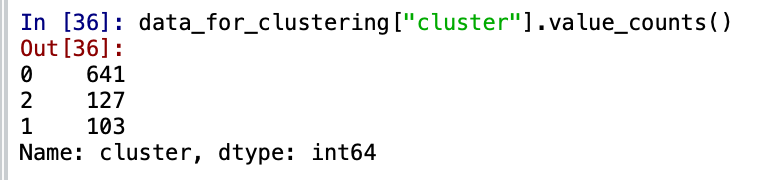

Business Case
Message from the ABC Grocery Team -
Hello Data Scientist,
We've been really impressed with your work so far, it's made a huge impact! We have another task that we're not sure how to solve, and we figured you might be able to help!
Our Senior Management Team can't quite agree on how to think about different types of grocery customers that are shopping with us. Some of the team think that everyone buys from all the food departments, juts varying amounts depending on how mant are in their household. Others in the team think there are specific diets or preferences at play, meaning that some customers shop or don't shop in certain product areas due to their lifestyles.
We don't really know how to tackle this problem - but since you're the data experts, would you be able to look through the data, and if possible, try to "segment" up the customers based on any differences you find?
If there are different groups within the customer base, please report back and we can discuss how we might go about using these insights in practice. We'd be really excited to understand there so we can serve our customers in a more targeted way!
Thanks in advance,
ABC Grocery Web Team
Abstract
- K-Means Clustering partitions data into distinct groups based on their similarity with each other. The number of distinct groups is determined by the value of K.
- The task of this project is to segment the customers based on their buying habits and figure out the type of groceries that the customers are shopping at The ABC Grocery.
- K-Means Clustering will help me understand if there are distinct patterns or differences in the product areas that the customers are shopping in.
Introduction
The ABC Grocery's senior management team are facing with an issue with customer segmentation. Some of the members think that the customers buy products from all the food departments, some think that the customers buy according to specific diets, while some think that the customers don't shop in certain areas due to their lifestyles. There has been a debate related to this within the management and they want this confusion to be solved. The team has provided me with the data of customers and have been given this task to find out differences in the customer buying habits. I have to segment the customers based on the products they buy in The ABC Grocery store and provide insights to the team for them to make knowledgeable business decisions. Since the management is talking about differences and partitioning customers based on these differences, it does seems like a good use case for clustering. And since I know how K-Means Clustering Algorithm works, I will be leveraging this algorithm to figure out the difference in this unsupervised learning task.
Imlpementation
1. Reading the data
- The ABC Grocery team has provided me with excel files that contain data for transactions and product areas in different sheets.
- For reading the data for Transactions and Product_areas I will use the Pandas library. Pandas has the read_excel functionality to read the two sheets respectively.
- I will convert the excel data into DataFrame as Pandas DataFrames are easy for Data Manipulation.
- Below is the data for the Transactions table.
- Below is the data for the Product Areas table.
2. Data Preprocessing
- I want a dataframe which shows percentage sales for each product area for each customer. To achieve this I will perform the following steps:
- Step 1 - Inner Join transactions and product areas:
I want the sales for every customer for every product area therefore, I will inner join transactions and product_areas with the common column product_area_id
I will use the merge functionality of Pandas to join the tables with parameters how = "inner" and on = "product_area_id" to inner join transactions and product areas. - Step 2 - Dropping Non-Food category:
The senior management is just concerned with the food category, hence I will drop the non-food category from product_area_name.
To achieve this - I will use the drop functionality of Pandas to drop the Non-Food category from product_area_name. - Step 3 - Aggregate sales at customer level:
I want to aggregate the sales at customer level based on each product area, i.e. how much a customer spent on each product area in total.
To achieve this - I will use the groupby functionality of Pandas group the data based on customer_id and product_areas and then calculate the total_sales by using the aggregate function sum(). - Step 4 - Pivoting the Data:
To visualize the data properly in a tabular format, I will pivot the table to convert columns to rows.
To achieve this - I will use the pivot_table functionality of Pandas turn the columns into rows with parameters for index = "customer_id", column_names = "product_area_names", values = "sales_cost" and the aggregate function aggfunc = "sum". - Step 5 - Turning sales to percentage sales:
I will convert all the sales to percentage sales.
To achieve this - I will use the div functionality of Pandas divide all the data by total column.
I will also drop the total column after the above calculation as I will not be needing the total column. - Step 6 - Checking missing values:
I will eliminate any missing values if there are any as I don't want any missing data.
To achieve this - I will use MinMaxScaler functionality of Pandas to find the cumulative sum of all the missing values.
It has been observed that there are no missing values therefore, I will continue further processing. - Step 7 - Scaling the Data:
I will scale the data as K-Means algorithm needs scaled data to work on.
To achieve this - I will use MinMaxScaler functionality of sklearn.preprocessing to scale the values in the range of 0 to 1.
K-Means Clustering Algorithm
- Select K random points in space (called centroids)
- Assign each data point to the nearest centroid
- Reposition the centroids to the mean dimension values of its cluster
- Reassign each data point to the nearest centroid.
- Steps 3 and 4 will continue until no data points move between clusters.
3. Model Building
- Step 1 - Selecting the value of K: Within Cluster Sum of Squares:
WSS measures the sum of squared euclidean distance of the data points that lie from their closest centroid. It helps us understand the point where adding more centroids provide little benefit.
To find this value I will plot many values for K and see how this WCSS metric changes. This is also called as inertia. As we increase the value of K, the WCSS value always decreases. I will look at a point where the decreasse is quite prominent before this point of diminishing returns. - Step 2 - Instantiate and Fitting the Model
I will instantiate an object kmeans with the number of clusters = 3
I will fit the data on the scaled clustering data that I created before.
From the above plot I can conclude that the value of K i.e. the number of clusters must be 3 as this is the prominent point before diminishing returns.
4. Results
- Use Cluster Information: To represent where each row of data belongs
I will create a new column named cluster to show in which cluster the row falls.
From the above figure, I can see that customers fall under clusters names 0, 1, 2.
It can be observed that the number of customers in cluster 0 are 641, cluster 1 are 127 and cluster 3 are 103. - Profiling our customers:
To understand exactly what the clusters do mean, I will need to do a little profiling. To do this, I will just perform summary statistics on the variables that I used to cluster. For this, for each cluster I will calculate the mean percentage of sales for each of the product areas and see what this shows up.
I will use the groupby functionality to group by each cluster and calculate the Mean based on each product area i.e. Dairy, Fruit, Meat, Vegetables.
From the above summary, I can obsserve that for every cluster the mean percentage of sales has been calculated. For examplem, Cluster 0 represents, 22% sales in Dairy, 26% sales in Fruits and so on respectively.
5. Conclusion
Looking at the tabular data that I obtained above I can conclude three things according to each cluster.
Cluster 0: For this cluster I can conclude that the customers are buying products from each section. And the meat consumption is th highest in this cluster.
Cluster 1: For this cluster I can conclude that the customers are buying very less - close to negligible in the Dairy and Meat section, Fruits and Vegetables
are consumed a lot for these two sections. The sales are 64% and 35% for the two sections respectively.
Cluster 2: For this cluster I can conclude that the customers are buying from every section except the Meat section, as the sales there are just 2%.
Therefore, I can confidently go to th senior management of the ABC Grocery Store and conclude that the customers from cluster 0 are buying everything.
Customers in cluster 1 can be Vegan as they are not spending anything in the dairy and meat section and the customers from cluster 2 could be vegeterian customers,
as they are not buying from the meat section. Presenting these findings will help The ABC Grocery team to segment customers based on Vegan, vegeterian and non-vegeterain customers.
This will help the team to build some strategies around the three segments.